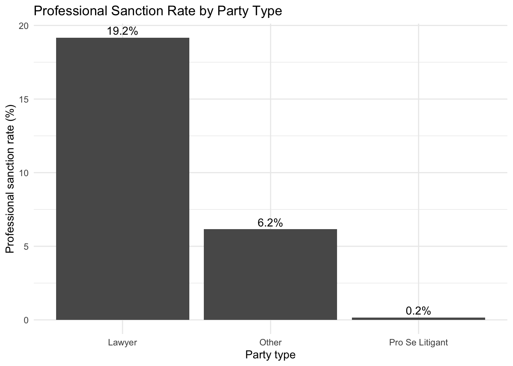

Research Question, Exploratory Analysis, and Decision Tree
Research Question
Artificial intelligence tools are increasingly being used in legal settings, but AI-generated hallucinations can introduce inaccurate information into legal documents and proceedings. Our research question is:
What characteristics of legal cases involving AI hallucinations are associated with whether a professional sanction is issued?
We focus on characteristics of the parties involved and the primary legal field of the case. Our response variable is whether the case resulted in a professional sanction.
Data Preparation
library(tidyverse)
── Attaching core tidyverse packages ──────────────────────── tidyverse 2.0.0 ──
✔ dplyr 1.2.1 ✔ readr 2.1.5
✔ forcats 1.0.0 ✔ stringr 1.5.1
✔ ggplot2 4.0.3 ✔ tibble 3.3.0
✔ lubridate 1.9.4 ✔ tidyr 1.3.2
✔ purrr 1.2.2
── Conflicts ────────────────────────────────────────── tidyverse_conflicts() ──
✖ dplyr::filter() masks stats::filter()
✖ dplyr::lag() masks stats::lag()
ℹ Use the conflicted package (<http://conflicted.r-lib.org/>) to force all conflicts to become errors
Rows: 2078 Columns: 18
── Column specification ────────────────────────────────────────────────────────
Delimiter: ","
chr (17): Case Name, Court, State(s), Party(ies), AI Tool, Hallucination It...
date (1): Date
ℹ Use `spec()` to retrieve the full column specification for this data.
ℹ Specify the column types or set `show_col_types = FALSE` to quiet this message.
hallucination <- hallucination |>mutate(sanction =factor(`Professional Sanction`,levels =c("No", "Yes") ),# Group party types for exploratory analysisparty_group =case_when(`Party(ies)`=="Lawyer"~"Lawyer",`Party(ies)`=="Pro Se Litigant"~"Pro Se Litigant",TRUE~"Other" ),# Variables used in the decision treeparty =factor(`Party(ies)`),legal_field =factor(`Legal Field Primary`),alleged =factor(Alleged),vendor_disputed =factor(`Vendor Disputed`) ) |>drop_na(sanction)
Exploratory Analysis
Because our response variable is whether a professional sanction was issued, we first examine whether the sanction rate differs across party types.
# A tibble: 3 × 4
party_group cases sanctions sanction_rate
<chr> <int> <int> <dbl>
1 Lawyer 819 157 19.2
2 Other 65 4 6.15
3 Pro Se Litigant 1194 2 0.168
ggplot( party_summary,aes(x = party_group, y = sanction_rate)) +geom_col() +geom_text(aes(label =paste0(round(sanction_rate, 1), "%")),vjust =-0.4 ) +labs(title ="Professional Sanction Rate by Party Type",x ="Party type",y ="Professional sanction rate (%)" ) +theme_minimal()

The exploratory analysis shows substantial differences in professional sanction rates across party types. Cases involving lawyers have a considerably higher sanction rate than cases involving pro se litigants, while cases classified as other party types fall between these groups. This suggests that party type may be an important predictor of professional sanctions and motivates its inclusion in the decision tree.
Decision Tree
To examine whether party type and other case characteristics jointly predict professional sanctions, we fit a classification tree using party type, primary legal field, alleged misconduct, and whether the AI vendor disputed the hallucination.
Because professional sanctions are relatively uncommon in the dataset, we use equal class priors so that the tree does not simply favor the majority class of cases with no sanction.
sanction is 0.02 with cover 60% when
party is Arbitrator or Expert or Federal Defender or Governement Lawyer or Judge; Lawyer or Lawyer; Pro Se Litigant or Paralegal; Lawyer or Pro Se Litigant or Pro Se Litigant; Lawyer or Prosecutor or Prosecutor; Judge
sanction is 0.39 with cover 1% when
party is Judge or Lawyer; Judge
legal_field is administrative or civil rights or contract or employment or habeas or IP or other or tort
sanction is 0.72 with cover 32% when
party is Lawyer
legal_field is administrative or civil rights or contract or employment or habeas or IP or other or tort
sanction is 0.83 with cover 7% when
party is Judge or Lawyer or Lawyer; Judge
legal_field is bankruptcy or criminal or family or immigration or landlord-tenant or tax
The decision tree identifies party type and legal field as important predictors of professional sanctions. The first split is based on party type, indicating that this variable provides the greatest reduction in classification error among the predictors considered. One branch contains approximately 60% of the cases and has a very low model-assigned probability of a sanction.
Among the remaining cases, legal field provides an additional important split. The tree identifies combinations of party type and legal field associated with substantially higher predicted probabilities of professional sanctions. In particular, one terminal node has a model-assigned probability of approximately 83% for a professional sanction and contains approximately 8% of the cases.
Overall, the tree suggests that professional sanctions are not evenly distributed across cases involving AI hallucinations. Instead, the predicted likelihood of a sanction varies substantially depending on the characteristics of the parties involved and the legal field of the case.
Random Forest
library(randomForest)
randomForest 4.7-1.2
Type rfNews() to see new features/changes/bug fixes.
Attaching package: 'randomForest'
The following object is masked from 'package:dplyr':
combine
The following object is masked from 'package:ggplot2':
margin
#creating random foresthallucination_train <-na.omit(hallucination_train)forest <-randomForest(sanction ~ party + legal_field + alleged + vendor_disputed,data = hallucination_train,ntree =500,importance =TRUE,proximity =TRUE)forest
Call:
randomForest(formula = sanction ~ party + legal_field + alleged + vendor_disputed, data = hallucination_train, ntree = 500, importance = TRUE, proximity = TRUE)
Type of random forest: classification
Number of trees: 500
No. of variables tried at each split: 2
OOB estimate of error rate: 7.94%
Confusion matrix:
No Yes class.error
No 1334 5 0.00373413
Yes 110 0 1.00000000
The accuracy of the single decision tree is 0.656, while the accuracy of the forest is 0.928. The sensitivity of the tree is 0.947 and the sensitivy of the forest is 0. We see an interesting result from comparing the two models in that despite its higher accuracy, the random forest resulted in a lot of false positives. This could be because the original data is very skewed in that the there are more no sanctions than sanctions.
Conclusions
There were some limitations to this analysis as the data isn’t clean. There were missing rows that had to be cleaned up for the random forest, and the response is very skewed in the actual data as described above. Nevertheless, we choose to compare the models by their misclassification error rates. The decision tree’s misclassification error rate is 0.3125, while the misclassification error rte of the random forest is only 0.071. With a lower error rate, we decide the random forest as the better model.